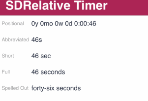

Sets the style with which the time interval will be displayed. Values
Scope Generators: Apple Description
The Format property offers these values for attributes/variables based on the data types: Date, DateTime, Time, and if their Control Type property is set to "Relative Timer." Run-time/Design-timeThis property applies only at design-time. Samples
 How to apply changesTo apply the corresponding changes when the property value is configured, execute a Build All. AvailabilityThis property is available since GeneXus 16 upgrade 3. |
| Backlinks |
| Relative Timer control |